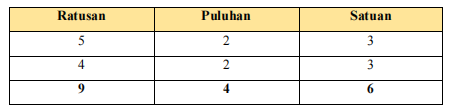

Bilangan Cacah: Penjumlahan dan Pengurangan
Materi: Penjumlahan dan pengurangan bilangan cacah sampai 1.000.
Bilangan cacah adalah bilangan yang dimulai dari bilangan 0 dan merupakan bilangan tak hingga. Dalam kehidupan sehari-hari, kita sering melakukan operasi penjumlahan dan pengurangan bilangan cacah, misalnya menghitung jumlah kelereng atau permen.
1. Penjumlahan Bilangan Cacah
A. Penjumlahan Bersusun Panjang
Berikut langkah-langkah penjumlahan bersusun panjang: 1.Menulis bilangan yang akan dijumlahkan secara bersusun sesuai nilai tempatnya 2.Menguraikan (dalam bentuk ratusan,puluhan,dan satuan) setiap bilangan yang akan dijumlahkan. 3.Menjumlahkan setiap bilangan pada nilai tempat yang sama.Contoh Soal:
1) 523 + 423 = 946
(500 + 400) + (20 + 20) + (3 + 3)
= 900 + 40 + 6 = 946
2)Pada hari sabtu ada 675 wisatawan lokal dan 344 wisatawan mancanegara
yang datang ke candi prambanan.Jumlah wisatawan yang datang ke candi Prambanan
pada hari sabtu adalah...
Cara penyelesaian:
= (600 + 300) + (70+40)+ (5 + 4)
= 900 + 110 + 9
= 900 + (100 + 10) + 9
= ( 900 + 100 ) + ( 10 + 9 )
= 1.000 + 19
= 1.019
B. Penjumlahan Bersusun Pendek
Berikut langkah-langkah penjumlahan bersusun pendek: 1.Menulis bilangan secara bersusun sesuai nilai tempatnya (satuan dengan satuan,puluhan dengan puluhan, ratusan dengan ratusan). 2.Penjumlahan dilakukan dari nilai tempat satuan ke nilai tempat puluhan dilanjutkan ke nilai tempat ratusan 3.Menjumlahan setiap bilangan sesuai nilai tempatnya.Contoh soal : 1)523 + 423 = 946 Cara penyelesaian